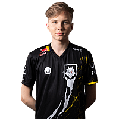

Илья́ Вячесла́вович О́сипов (род. 1 мая 2005, Орехово-Зуево, Россия) — российский киберспортсмен в Counter-Strike 2 играющий под псевдонимом m0NESY.
Обладатель медали MVP (с англ. — «самый ценный игрок») от HLTV за турнир Blast Premier World Final 2022.В 2020 году был принят в NAVI Junior — молодёжный состав Natus Vincere, с которым Илья смог добиться призовых мест на турнирах среди академий. В начале 2022 года Осипов присоединился к составу крупной киберспортивной организации G2.
Осипов начал увлекаться игрой в Counter-Strike 1.6 когда ему было ещё 6 лет, а спустя три года перешёл в CS:GO. В десятилетнем возрасте Илья достиг самого высокого уровня (звания) в игре — Global Elite, а к 12 годам дошёл до максимального уровня на платформе Faceit.Илья начал карьеру в июле 2019 года, вступив в команду NewBALLS, с которой вышел в финал HardCup. В 2020 году засветился в составе Ztayhome, одержал победу на Dell Gaming Cup #2.
В январе 2020-го был принят на испытательный срок в NAVI Junior.После перехода Ильи в новый состав, инсайдер Алексей «OverDrive» Бирюков предостерёг молодого игрока от ошибок в начале карьеры.
«Сейчас во всех пабликах повышенное внимание к m0nesy. Напомню, что ему 14 лет, это переходный возраст из детства во взрослую жизнь, в голове формируется общее восприятие мира и определение себя в этом мире, идёт переоценка ценностей. В этом возрасте человек очень уязвим и легко подвергается влиянию извне. Я это к тому, что он может поймать звезду и решить, что он уже состоявшийся игрок и можно уже не так париться, а это ведёт к печальным последствиям в плане карьеры. Ему надо понимать, что пока он ноунейм, талантливый, но ноунейм, которому ещё предстоит всем доказывать, что он чего-то стоит!»
Тренер NAVI Junior Амиран «Ami» Рехвиашвили отметил, что пока m0NESY не сможет выступать на турнирах из-за возрастных ограничений, но организация будет работать над раскрытием его навыков и даст нужные знания.
Мы давно следили за Ильей и очень рады, что он присоединился к NAVI. В 14 лет он обладает качествами, которые позволят ему стать чемпионом: его чувство игры и целеустремленность впечатляют. Из-за возрастных ограничений сейчас он не сможет выступать на турнирах, но очень важно, чтобы он уже получал нужные и правильные знания. Уверен, что тренировки с NAVI.Junior помогут ему раскрыть свой потенциал».
В конце 2020 года вместе с коллективом пробился в полуфинал European Development Championship Season 1. С 19 июля по 8 августа 2021 года в Киеве проходил турнир WePlay Academy League Season 1, в котором NAVI Junior заняли 5 место, не попав в плей-офф стадию. Во втором сезоне турнира NAVI Junior также приняли участие и заняли третье место, встретившись в финале с MOUZ NXT. Позже NAVI Junior заняли второе место на турнире WePlay Academy League Season 2 Finals, заработав 20 000 $ призовых
В начале 2022 года Осипов присоединился к составу G2, заменив Франсуа «AMANEK» Делоне. Первым крупным турниром для нового состава стал IEM Katowice 2022, где команда в плей-оффе обыграла Virtus.pro и сильнейших на тот момент Natus Vincere, но в финале уступила коллективу FaZe Clan. Илья был номинирован на победу в рейтинге 30 самых перспективных россиян до 30 лет по версии Forbes в 2022 году в категории «Спорт и киберспорт». Илья с командой выиграли турнир Blast Premier World Final 2022. Занял 7 место в списке лучших игроков 2022 года, а также был назван «новичком года» по версии портала HLTV. В 2023 году Илья с командой одержал победу на двух турнирах серии Intel Extreme Masters: Katowice и Cologne. По итогам года занял 4 место в рейтинге лучших игроков мира по версии HLTV.
